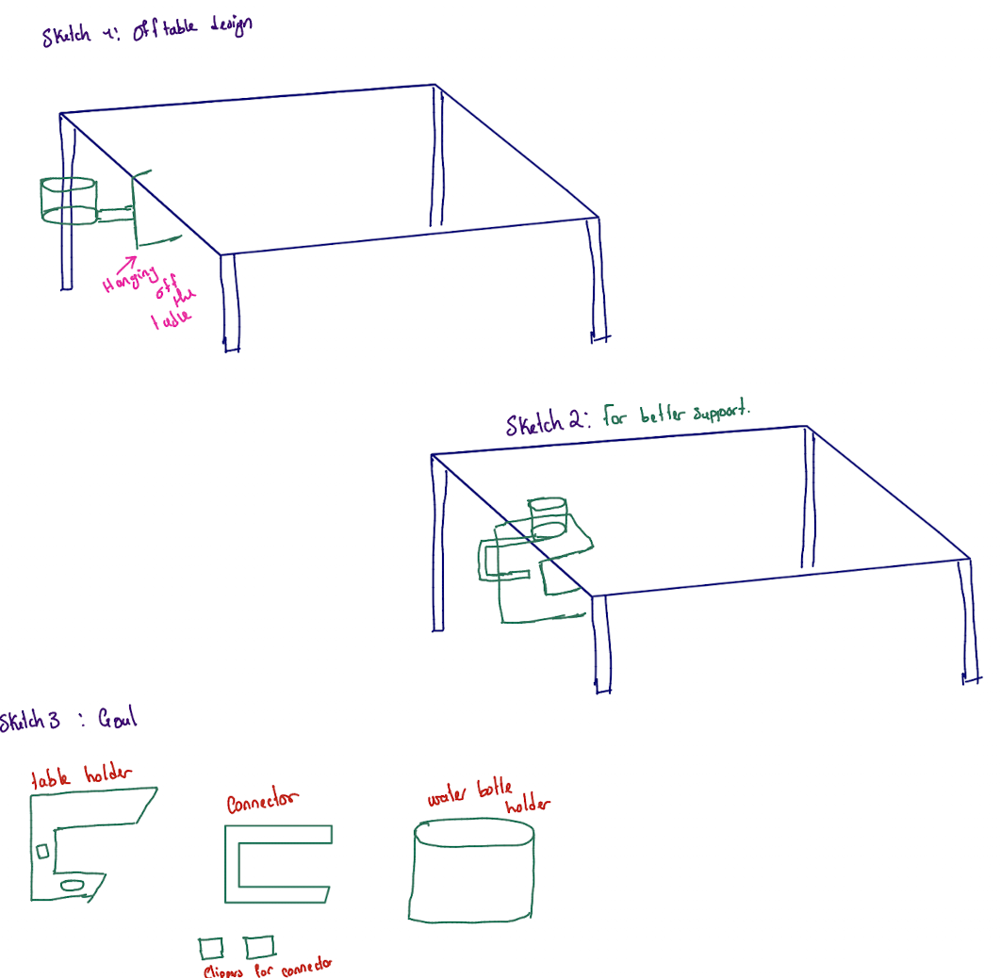
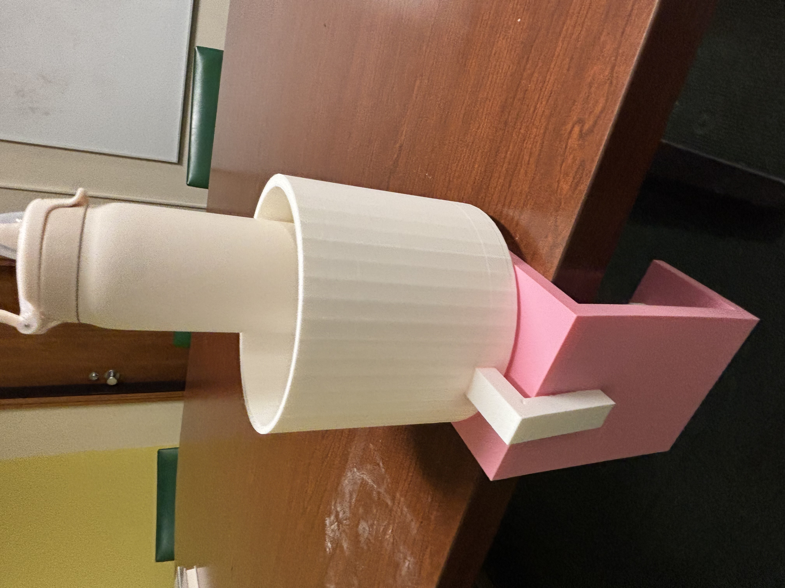
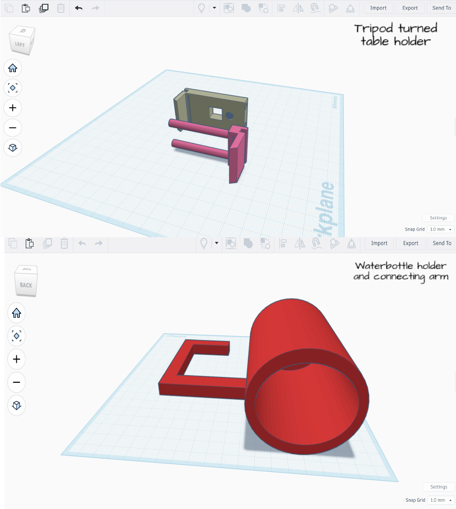
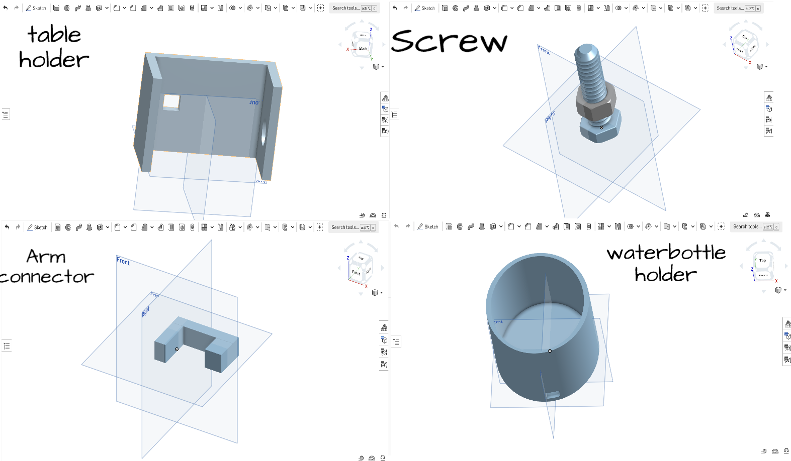

Clip on Water Bottle Holder

The idea for this design came from a personal and ongoing issue that I kept running into, accidentally knocking over my water bottle in quiet settings like classrooms or at night, where the noise is both unnecessary and embarrassing. After it happened multiple times, it became clear that this was a small but common problem that could be easily avoided with a simple solution. My initial idea was to design a holder that attached off the side of a table; however, as I thought more about stability, ease of printing, and the need to support larger water bottles, this approach began to feel unreliable. Moving the design onto the tabletop allowed for better balance and overall support while still keeping the bottle secure and out of the way. This made the concept more practical and dependable, as it directly prevents bottles from tipping over in the first place. The sketches shown to the right reflect the different iterations and improvements made throughout this idea-development stage, leading into the more refined design process outlined below.

This project began with a search for a table-mounted water bottle holder on Thingiverse, but none of the available designs fit my needs. I then came across a tripod phone clip (click here to view website) and decided to repurpose it into a table holder. Implementing Systematic Inventive Thinking pattern (Addition), I created a custom structure in Tinkercad, designing a rectangular connector to fit the phone clip, adding perpendicular and parallel support arms, and attaching a hollow cylinder to hold the water bottle. Several design and printing issues arose, including misalignment that caused parts to print midair, instability from poor height placement, a cylinder that was too small to fit standard bottles, and a clip unable to support the weight of the full structure. These challenges required several revisions to the design. Ultimately, the limitations of precision and stability led me to transition the project to Onshape, where I focused on improving dimensions, weight distribution, and overall reliability.

In the Onshape phase of the project, I redesigned the model to improve precision, stability, and scalability. I began by creating a new table holder from scratch, intending to secure it to the table using a screw and bolt mechanism. Although this required multiple attempts, it allowed me to better understand tolerances and fastening challenges in 3D printing. I then redesigned the water bottle holder to be significantly larger so it could accommodate a variety of bottle sizes, while also increasing wall height to prevent tipping, even if the holder leaned against a wall. The connector was designed as a separate component to ensure accurate fitting between the table holder and the bottle holder, with added flexible clip features to allow minor adjustments without reprinting the entire model. The most challenging aspect was the screw and boltdesign, which initially failed due to improper threading geometry. After seeking guidance from the maker lab and identifying the lack of a lead-in on the threads, I redesigned the fastener to improve functionality. Overall, the Onshape redesign addressed the limitations of the earlier model by improving fit, weight distribution, and modularity.
OnShape vs. Tinkercad
Overall, Tinkercad was much easier to use when it came to quickly designing simple components, such as the connector and cylindrical holder, and it allowed me to turn an idea into a model very fast. However, that simplicity also led to complications, especially with alignment and proportions, which resulted in issues like gaps, instability, and parts not sitting flat or standing properly. Onshape, while more challenging to learn at first, allowed for a higher level of precision and control, which helped eliminate these problems by making it easier to define exact dimensions and relationships between parts. This difference became especially clear when refining the design to ensure everything was properly aligned and supported. Based on this experience, I would recommend Tinkercad for quick, straightforward, and less complex designs, while Onshape is better suited for more detailed projects that require accuracy, structural planning, and long-term refinement.

Figure 4: Designs in Tinkercad (click on to view full size)

Figure 5: Designs in Onshape (click on to view full size)